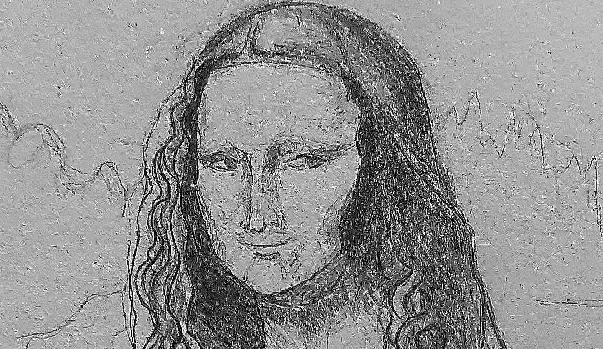
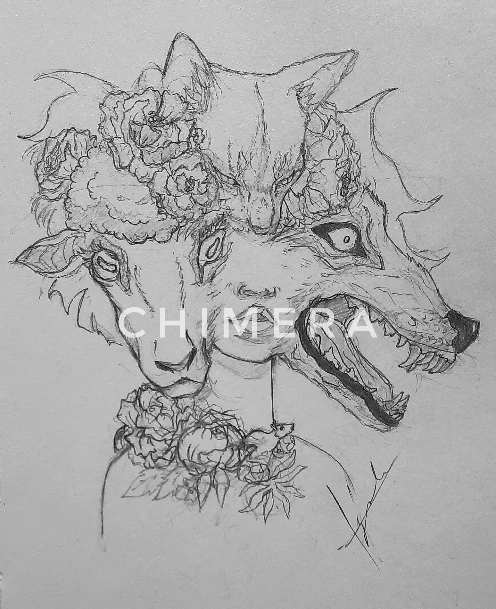
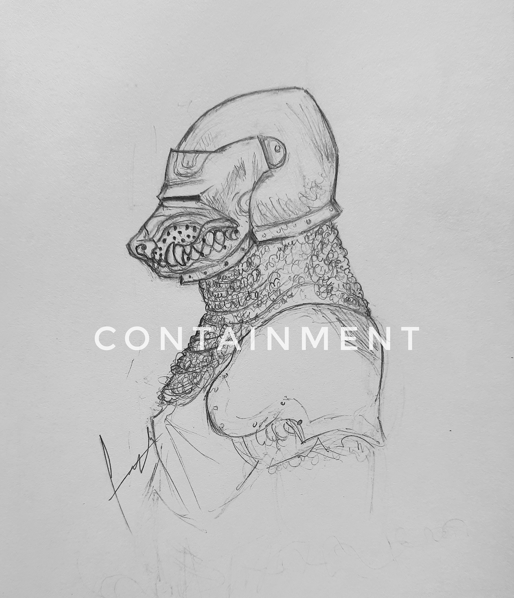

Mona Lisa Revisited

Smiling through dread since 1503
This modern reinterpretation of Leonardo da Vinci’s Mona Lisa blends classical portraiture with contemporary street style — featuring purple and silver sneakers that hint at today’s culture. The sketch retains the iconic pose and enigmatic expression, while introducing bold elements that question identity, time, and tradition.
View Portfolio Commission InfoEvery sketch tells a story, every line has purpose.
Featured Character Concepts

A concept sketch reimagines the mythological Chimera with a blend of a goat, a wolf, and a feline, each head rendered in anatomical detail. Interwoven with blooming flowers, the composition explores the tension between beauty and brutality, nature and monstrosity.

A creature sealed inside medieval armor, its monstrous features barely restrained by steel and chainmail. This sketch explores the idea of control — whether the armor protects others from the beast or the beast from itself.
I enjoy exploring narratives inspired by the contradictions we find in nature.